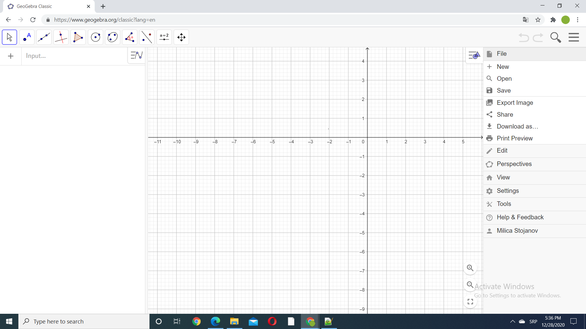

Postoji veliki broj matematičkih oblasti u kojima bi nam GeoGebra bila veoma korisna.
Ovde ćemo videti jedan mali deo toga.
GeoGebra nam može pomoći pri grafičkom prikazivanju statističkih podataka.
Kada otvorimo sajt GeoGebra pojavljuje se sledeće:
U gornjem desnom uglu postoji ikonica sa padajućim menijem:

Nama je potrebna ikonica pod nazivom "View" pomoću koje podešavamo šta ćemo videti na ekranu.
Odabraćemo da vidimo "Graphics" i "Spreadsheet":

U kolonu A upišemo podatke koje želimo da prikažemo grafički. Ovde smo uzeli podatke iz zadatka koji smo radili prilikom upoznavanja
sa parametrima centralne tendencije i merama rasejanja.
Takođe, ako smo podatke sačuvali u nekom fajlu napravljenom pomoću Excel-a
Geogebra će nam dozvoliti da jednostavno prekopiramo potrebnu kolonu:
Selektovaćemo čitavu kolonu A i u gornjem levom uglu izabrati drugu ikonicu:
Odabraćemo "One Variable Analysis" jer radimo sa jednom promenljivom:
Pojavljuje nam se histogram apsolutnih frekvencija.
Na ikonici koja označava "Settings" imamo naprednija podešavanja histograma:
Umesto histograma možemo odabrati i druge načine za grafički prikaz podataka:
Ovde je dat jedan kutijasti dijagram za date podatke:
Napomena: Kada menjamo način grafičkog prikaza istih podataka,neophodno je ponovo selektovati sve podatke